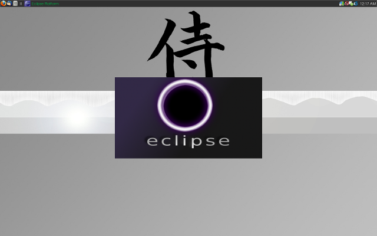

++Customization & Tips++
:: Custom Eclipse Splash-screen ::
Eclipse is above-all my favorite [heavyweight] IDE, so I find myself opening it quite often. Thus, it's splash-screen is quite a common sight on my desktop, albeit an unattractive one. Luckily, there's a rather straight-forward way of changing it from the bland default image.
Eclipse stores its splash-screen image as splash.bmp, though the location of this file's directory differs across operating systems. In the case of Linux of case, the file you'll want to note is located here:
/usr/share/eclipse/plugins/org.eclipse.platform_[version]/splash.bmp
Once you have the location down, it's just a matter of replacing that image with a more preferable one. There are some(though not too many) Eclipse splash-screens scattered throughout the web, but I didn't particularly like any of the ones I came across, so I made my own:
Granted, it's not that pretty, but it'll suffice for now(feel free to use it yourself).
And that's pretty much it. Final result:
